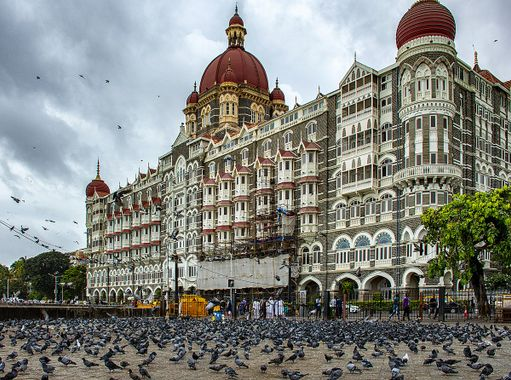
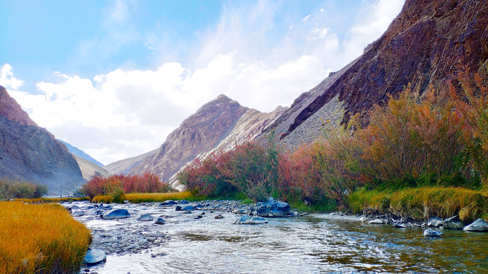

PLACES
Delhi
The capital city is brimming with historical monuments, UNESCO World Heritage sites, cafes, bars, a lit nightlife and delicious street food. Explore the narrow lanes of Old Delhi, soak in the old world charm of Qutub Minar, and go on a food trail in the scanty lanes of Chandni Chowk. You can find all those and lots more in this Delhi travel blog. Discover all the hyperlocal gems, dine on Mughlai curries, know the best bars to visit to witness a thriving nightlife and Delhi’s top notch crowd. Explore all the best street food joints to enjoy the Delhi(cacies) with your loved ones and make your trip to Delhi a fulfilling one. Delhi is the melting pot of culture with so many shopping destinations and places to explore that you’ll be spoilt for choice.

Mumbai
Mumbai, previously known as Bombay is one of the most populous and biggest cities of Maharashtra. Also the biggest metropolis of this state, Mumbai is also popular as the entertainment and financial capital. It is the largest city of India and fondly called as the city of dreams. It is a place filled with dreamers and people who work hard day and night to achieve their dreams. From struggling actors, laboureres, Bollywood stars to gangsters, Mumbai has a lot. A lot that can be written about and talked about! Mumbai is also home to one of the biggest slum area as well as home to the richest and thus it is only fair to describe Mumbai as a city for all.

Leh, Ladakh
The barren beauty of Ladakh in India with snow-capped peaks and the clean azure sky has continued to attract the intrepid travelers. The scenic destination has maintained to cast its spell since the region was opened to tourists in the 1970s. Since then, Ladakh has become a favorite haunt for trekking and mountaineering enthusiasts. The rugged terrain and the majestic mountains around, make an exotic cocktail for an adventure lover. But before you decide to fly away to the land of Buddhist monasteries and brave people, here's everything that you need to know. It is imperative to understand that you need at least a week to acclimatize and enjoy your tour to Ladakh.

Kerala
In this lush, tourist-friendly southern state, positioned between the Arabian Sea and the Western Ghats, beaches, waterfalls, rice paddies and verdant green hills create a postcard-perfect landscape. Houseboats traverse its many waterways, providing an intimate look at its rural terrain. Rejuvenation programs through Ayurveda (alternative, natural medicine) are popular here; the cool June and mid-October monsoon seasons are considered ideal for healing therapies.

Goa
The sandy coast of Goa is perfect for reclining by the sea. Nestle into a cushioned chair at a beach shack and savor a curry while you sip a Kingfisher beer, watching the sun slip lazily below the horizon. In Old Goa, the beautiful Basilica of Bom Jesus is a UNESCO World Heritage Site and a fine example of baroque architecture. Visit during Christmastime to experience a fantastic religious and cultural mash-up of East and West.